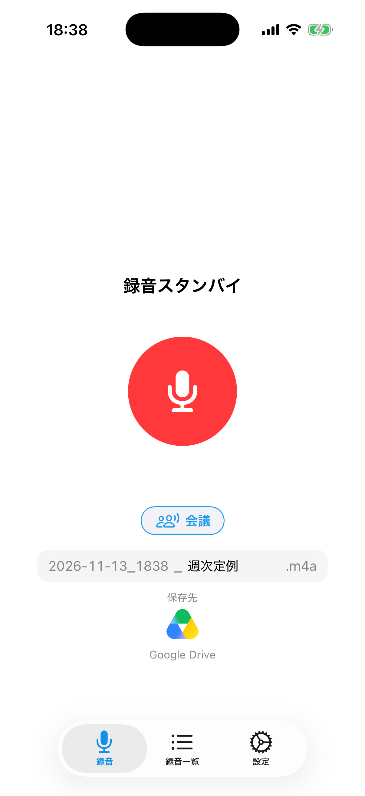

録音を止めたら、もう Drive に入っている。
会議を録る iPhone アプリ。録音は自分のクラウドへ自動で届きます。
無料でダウンロードできます。iOS 17 以降の iPhone に対応。
Google ドライブ
マイドライブRecExport
drive.google.com| 名前 | 更新日時 |
|---|---|
| 2026-11-12_1403_週次定例.m4a | 14:41 |
| 2026-11-11_1405_デザインレビュー.m4a | 11月11日 |
| 2026-11-10_0900_経営学_第5回.m4a | 11月10日 |
| 2026-11-07_1630_顧客ヒアリング.m4a | 11月7日 |
| 2026-11-06_1100_1on1.m4a | 11月6日 |
| 2026-11-05_1500_ゼミ.m4a | 11月5日 |
6つの手順が、2つに。
iPhone 標準のボイスメモ
- 録音
- 停止
- ファイル名を変える
- 共有をタップ
- Drive とフォルダを選ぶ
- アップロードを待つ
 RecExport
RecExport
- 録音
- 停止
アップロードも、フォルダ分けも、名前付けも自動です。アプリを閉じたあとも進みます。
会議のまわりの面倒を、なくす。
| これまでの面倒 | RecExport がすること |
|---|---|
| 録り忘れる | カレンダーの予定の前に、お知らせが届きます。 |
| 会議室の雑音 | 会議モードで、まわりの雑音を抑えます。 |
| あとから名前を付ける | 日付・時刻・予定名で保存。あとで探せます。 |
| iPhone の容量不足 | クラウドに保存済みの分は、端末から自動で消せます。 |
| iPhone の故障・紛失 | 録音はもう、あなたのクラウドにあります。 |
こんなふうに使われています。
-
録音ファイルGoogle ドライブ
会議を毎回、議事録の素材に
カレンダーのお知らせで録り始めて、予定名のままドライブへ。
-
録音ファイルドライブ自宅の NAS
クラウドと NAS に、同時に
ひとつの録音を、2か所へ自動で保存しています。
-
録音ファイルクラウドAI
あとは AI で、文字起こしと要約
クラウドに入った録音を、自分の使っている AI に読ませている人もいます。
録音は、あなたのクラウドに直接。
RecExport のサーバーには置きません。アカウント登録もいりません。
- 件の録音が、もうクラウドに
- 5,000+
- 時間ぶんの会議や講義
- 1,500+
- か国の人が使っています
- 60+
| 保存先 | サインインに使うもの | 保存件数 |
|---|---|---|
| Google ドライブ | Google アカウント | 3,600+ |
| Dropbox | Dropbox アカウント | 600+ |
| OneDrive | Microsoft アカウント | 400+ |
| NAS・自分のサーバー | WebDAV または S3 | 200+ |
| 2026年11月時点のおおよその数です。保存先ごとの内訳は、匿名の利用集計での比率から出しています。 | ||
- RecExport のアカウント
- 不要
- 必要なもの
- iOS 17 以降の iPhone
- 価格
- 無料でダウンロード
よくある質問
録音が RecExport のサーバーに保存されることはありますか？
ありません。録音は iPhone から、あなたが選んだ保存先へ直接送られます。
録音中に iPhone をロックしたら、止まってしまいますか？
止まりません。ロックしてポケットに入れて大丈夫です。
電波がない場所でも録音できますか？
できます。録音は iPhone に保存され、つながったときに自動でアップロードされます。
保存するフォルダは選べますか？
はい。保存先ごとに、設定で選べます。
次の会議から、録ってみる。
